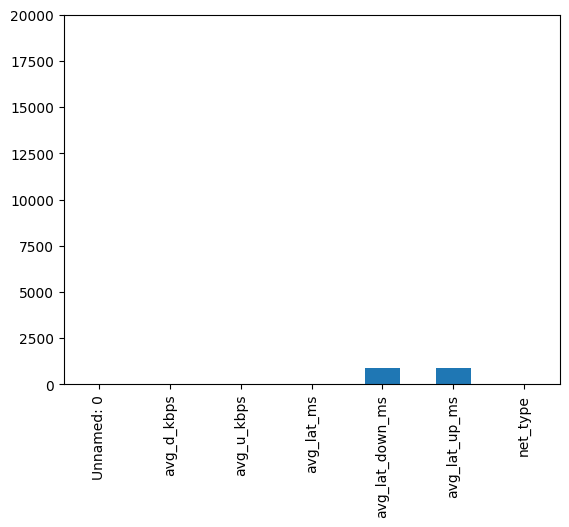

There are many rows of data so we can drop every row that contains NaN entries and still have enough to train our prediction models and test our hypotheses.
In [56]:
Code
# Create a deep copy of the dataframe for cleaningcleaning_df = df.copy()# Not many rows with missing values as shown in plotcleaning_df.isna().sum().plot(kind='bar', ylim=(0, cleaning_df.shape[0]))# Drop rows with missing valuescleaning_df.dropna(inplace =True)

Figure 1: Bar plot of missing values in each column
Column ‘Unamed: 0’ is not needed therefore we will drop it from the dataset. Correct the spelling of the ‘moblie’ to ‘Mobile’ and capitalize ‘fixed’ in ’net_type column and convert that column to a category dtype.
In [57]:
# drop unnecessary index columncleaning_df.drop(columns='Unnamed: 0', inplace=True)# Correct spelling mistake and capitalizecleaning_df.replace('moblie', 'Mobile', inplace=True)cleaning_df.replace('fixed', 'Fixed', inplace=True)# change column to category typecleaning_df['net_type'] = cleaning_df['net_type'].astype('category')cleaning_df['net_type'].unique()
# Drop any duplicate entries in the dataframecleaning_df.drop_duplicates(inplace=True)
Check the two columns set as a float64 dtype to see if they can be changed to int64. If they only have integers in them then convert to int64.
In [59]:
#set bool to True intially, bool will change to False if any floats are discoveredis_int =True# iterate through each row in columnfor row in cleaning_df['avg_lat_down_ms']:#if value isn't an integer set bool is_int to false and exit loopifnot row.is_integer(): is_int =Falsebreak# if after checking there are no floats found in column convert column to int64if is_int: cleaning_df['avg_lat_down_ms'] = cleaning_df['avg_lat_down_ms'].astype('int64')#set bool to True intially, bool will change to False if any floats are discoveredis_int =True# iterate through each row in columnfor row in cleaning_df['avg_lat_up_ms']:#if value isn't an integer set bool is_int to false and exit loopifnot row.is_integer(): is_int =Falsebreak# if after checking there are no floats found in column convert column to int64if is_int: cleaning_df['avg_lat_up_ms'] = cleaning_df['avg_lat_up_ms'].astype('int64')cleaning_df.info()
All of the columns are using the same units of measurement and set to the correct data type. Spelling errors have been corrected and all rows containing missing values have been dropped from the dataset. The unnamed index column has also been dropped as it is not needed. Now we save the cleaned dataset for use in Analysis.ipynb.
In [62]:
# rename columns to the unit they will be converted intocleaning_df.rename(columns={'avg_d_kbps' : 'avg_d_mbps', 'avg_u_kbps' : 'avg_u_mbps'}, inplace=True)# convert kbps to mbps for more readabilitycleaning_df['avg_d_mbps'] = cleaning_df['avg_d_mbps']/1000cleaning_df['avg_u_mbps'] = cleaning_df['avg_u_mbps']/1000cleaning_df
avg_d_mbps
avg_u_mbps
avg_lat_ms
avg_lat_down_ms
avg_lat_up_ms
net_type
1
50.073
18.199
40
475
1954
Mobile
2
21.784
0.745
47
1493
2252
Mobile
3
18.159
1.662
21
244
2067
Mobile
4
1.439
0.659
749
2357
5083
Mobile
5
13.498
3.525
37
598
1023
Mobile
...
...
...
...
...
...
...
19995
215.644
114.035
14
384
606
Fixed
19996
48.533
17.553
34
172
43
Fixed
19997
5.732
0.473
52
8039
304
Fixed
19998
116.025
129.465
8
91
219
Fixed
19999
145.911
42.130
15
139
555
Fixed
19030 rows × 6 columns
In [63]:
#save cleaned dataset to a parquet file to preserve the dtype info in the dataframecleaning_df.to_parquet('cleaned_dataset.parquet', index=False)